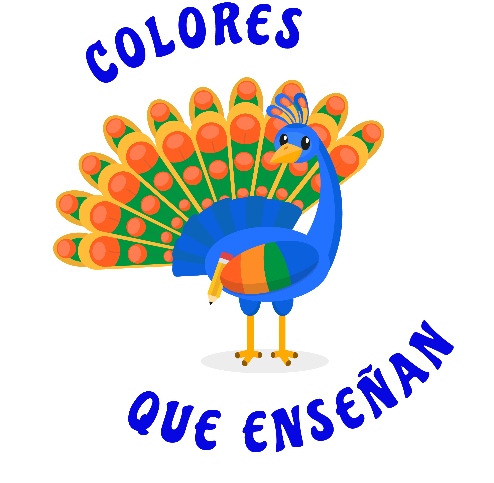

¡Bienvenidos a Colores que Enseñan!
Imagina que el mundo es como un gran lienzo de colores donde cada persona aporta su propia luz, brillo y alegría. Aquí queremos contarte de forma muy divertida y sencilla cuáles son las diferentes discapacidades que podemos encontrar a nuestro alrededor, como la visual, la auditiva, la motriz, la intelectual, la psicosocial o la múltiple cuando se tiene más de una.
En este espacio vas a descubrir que eso es justo lo que nos hace únicos. ¡Prepárate para explorar, jugar y aprender!
Selecciona una Discapacidad
Haz clic en cualquiera de las opciones para ingresar a su sección informativa y de interacción:
Discapacidad Auditiva
Inclusión a través de estímulos visuales
¿Qué es?
Imagina que todos tenemos un "botón de volumen" en los oídos para escuchar los sonidos del mundo, pero las personas con discapacidad auditiva tienen ese volumen muy bajito o en modo silencio; esto no significa que no puedan comunicarse, sino que utilizan formas increíbles para hacerlo, como usar las manos con la lengua de señas, observar el movimiento de los labios o usar aparatos especiales. Lo más importante es saber que son personas como tú y como yo, con los mismos sueños y ganas de jugar, y que cuando hablemos con ellos solo debemos mirarlos a la cara, hablar claro y ser pacientes para entendernos mejor.
Ritmo y Luz Visual
En este juego, la música y los sonidos se convierten en luz, ritmo visual y formas geométricas. Supera los 10 niveles progresivos: cada nivel añade un destello más a la secuencia y acelera el ritmo. Observa bien los paneles iluminados y repite el patrón en el orden correcto.
Discapacidad Visual
¿Qué es?
Imagina que las personas con discapacidad visual tienen un "filtro" en sus ojos que les impide ver bien, por lo que ven todo muy borroso o no pueden ver imágenes; por eso, ellos usan sus oídos, su olfato y sus manos para conocer el mundo, leyendo con sus dedos gracias a puntitos especiales llamados Braille o usando bastones para caminar con seguridad.
Eco-Localización (Laberinto a Oscuras)
Eco-Localización: El laberinto está completamente a oscuras. Para encontrar la salida, haz clic en el botón Radar para lanzar un pulso de eco que revelará los muros temporalmente. Muévete usando los botones de flecha o el teclado. ¡La cercanía de tu bastón también revela los bloques adyacentes!
Discapacidad Motriz
¿Qué es?
Es cuando el cuerpo de alguien funciona de forma diferente al moverse, como si sus piernas o sus brazos no les hicieran caso tan rápido o no tuvieran la misma fuerza; por eso, algunas personas necesitan usar una silla de ruedas o muletas para ir a todas partes, pero esto no les quita las ganas de jugar, de correr carreras con nosotros o de participar en todo.
Acceso por Pulsador Único
Pulsador Único: Un puntero gira continuamente. No necesitas coordinar muchas teclas ni mover un mouse: solo dispones de un gran pulsador. Haz clic en el botón PULSAR (o presiona la tecla de Espacio) exactamente cuando la aguja pase por la zona verde para sumar puntos. ¡La zona verde cambiará de posición con cada acierto!
Discapacidad Intelectual
¿Qué es?
Significa que el cerebro de estas personas aprende de una forma distinta, como si ellos necesitaran que les expliquemos las cosas con más calma, con dibujos o con pasos muy sencillitos; a veces les toma un poco más de tiempo entender algunas tareas, pero con nuestra ayuda y mucha paciencia, ¡pueden aprender todo lo que se propongan!
Higiene Saludable (Secuencia de Lavado de Manos)
Higiene Saludable: Organiza la secuencia de lavado de manos. Toca los pictogramas en el orden lógico correcto para colocarlos en los cuadros de arriba. Si te equivocas, haz clic en el pictograma del tablero superior para devolverlo.
Discapacidad Psicosocial
¿Qué es?
A veces, las emociones de estas personas se sienten muy intensas, como si tuvieran una tormenta de sentimientos dentro que los hace sentir muy tristes, asustados o confundidos; cuando esto pasa, lo más importante es ser muy amables, escucharlos con mucho cariño y darles un espacio tranquilo para que se sientan seguros otra vez.
Calma de Estímulos
Calma de Estímulos: El cerebro necesita mantenerse sereno. Esferas de estímulos ruidosos y de estrés caen rápidamente. Haz clic o presiona en los estímulos para disolverlos y restaurar la barra de calma de nuestro cerebro.
Discapacidad Múltiple
¿Qué es?
Esto pasa cuando una persona tiene más de una discapacidad al mismo tiempo, por ejemplo, que le cueste trabajo ver y también moverse; esto hace que su forma de conocer el mundo sea única y especial, por lo que necesitan que los demás seamos muy observadores para entender qué es lo que necesitan y encontrar juntos la mejor manera de jugar y aprender.
Explorador Multisensorial (Causa y Efecto)
Explorador Multisensorial: Presiona los activadores adaptados de alto contraste para generar respuestas inmediatas combinadas de luz, frecuencia sonora e ilustración de causa y efecto.